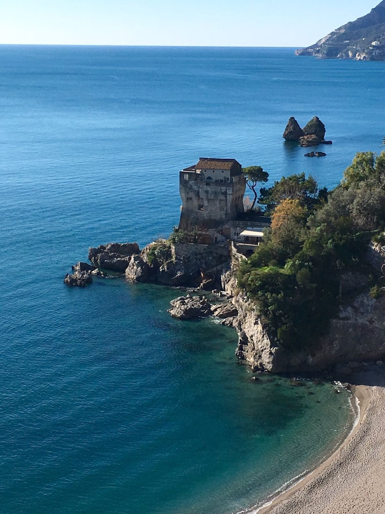

Costiera Amalfitana
Esplorare la Costiera Amalfitana da Villa San Vito
Villa San Vito è una base tranquilla per scoprire la Costiera Amalfitana, alternando borghi sul mare, ceramiche, itinerari via terra, collegamenti marittimi e rientri serali nella quiete di Raito.

Itinerari
Borghi, mare e cultura a portata di giornata
Da Raito potete raggiungere Vietri sul Mare e Cetara in poco tempo, proseguire verso Minori e Ravello, oppure dedicare una giornata ad Amalfi, Praiano, Furore e Positano seguendo il ritmo della costa.
La posizione permette di scegliere ogni giorno il modo migliore per muoversi: auto, scooter, bus locali, traghetti, aliscafi o taxi boat, con Salerno come riferimento comodo per arrivi, partenze e collegamenti.
Base ideale
Un soggiorno pensato per esplorare senza cambiare casa
La villa consente di costruire un viaggio vario senza rinunciare alla continuità di una casa privata: colazione lenta, escursione in Costiera, rientro in terrazza e una serata più intima sopra il Golfo di Salerno.
Vai alle prenotazioni